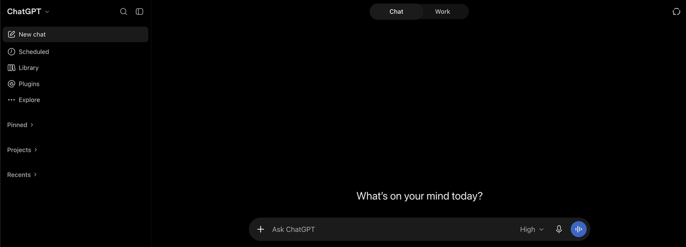
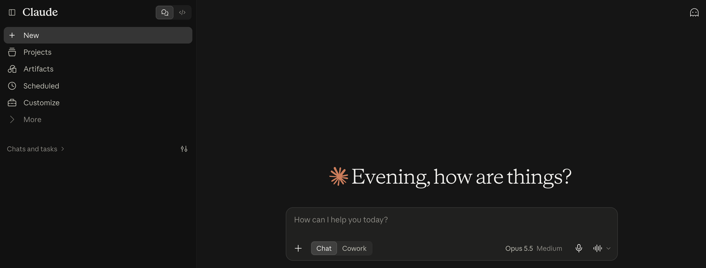
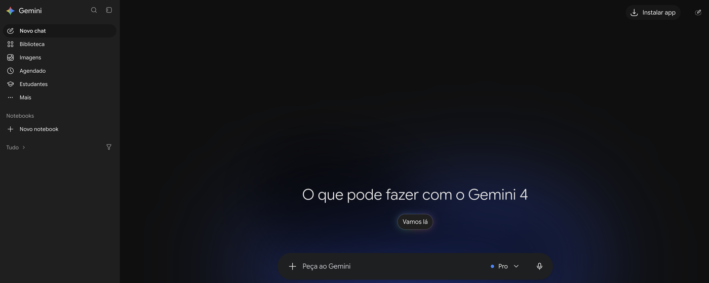
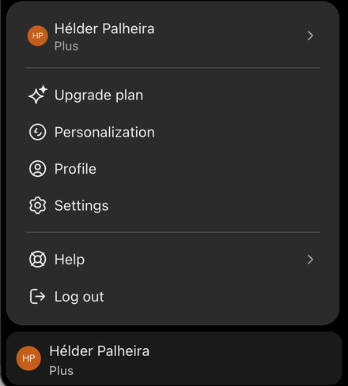
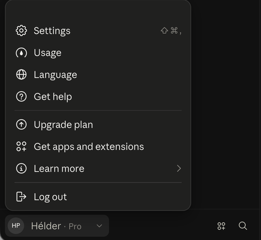

Interface gráfico: ChatGPT, Claude e Gemini
Onde estão as coisas — e onde se personaliza o assistente
O que vamos conseguir fazer
- Orientar-nos em qualquer assistente pelas mesmas quatro zonas
- Anexar ficheiros e ligar ferramentas a partir da caixa de mensagem
- Encontrar e configurar a personalização: instruções, memória, Projetos e Gems
- Usar uma conversa sem memória
- Rever e apagar o que o assistente guardou sobre nós
Uma anatomia comum
Quatro zonas, nos três assistentes
Barra lateral
Nova conversa · pesquisa · histórico
Contexto por tema: Projetos (ChatGPT, Claude) · Gems (Gemini)
Menu da conta
Nome ou iniciais → Definições: personalização, privacidade, dados
Área de conversa
Pergunta e resposta · copiar, regenerar, avaliar, partilhar
Caixa de mensagem
Escrever · "+" para ficheiros e ferramentas · voz · seletor de modelo
Na prática: o ecrã inicial

ChatGPT — barra lateral com Projetos e Recentes; seletor "ChatGPT ▾" no topo; chat temporário no canto superior direito; "+" e nível de raciocínio na caixa.

Claude — barra lateral com Projects e Artifacts; fantasma (conversa incógnita) no canto superior direito; "+", modo e modelo na caixa.

Gemini — barra lateral com Biblioteca e Notebooks; "+" e seletor de modelo ("Pro ▾") dentro da caixa de mensagem.
Capturas de 14/10/2026, com sessão iniciada. A interface muda com o plano, o idioma e as atualizações.
A caixa de mensagem faz mais do que escrever
Anexar
PDF, imagens, folhas de cálculo — pelo "+" ou arrastando para a caixa.
Ferramentas
Pesquisa na web, investigação aprofundada, criação de imagem, conectores — também pelo "+".
Sem memória
ChatGPT: chat temporário, canto superior direito.
Claude: conversa incógnita — ícone do fantasma, canto superior direito.
Gemini: conversa temporária.
Exercício: anexar um PDF de teste sem dados de doentes e pedir um resumo em 5 pontos.
Personalização: o contexto que fica
Três camadas de contexto persistente
1 · Instruções globais
Escritas por si. Aplicam-se a todas as conversas: quem é, como quer as respostas.
2 · Memória
O que o assistente guarda das conversas. Convém rever e apagar.
3 · Contexto por tema
Projetos ou Gems: instruções e ficheiros para um assunto recorrente, separado dos outros.
As três camadas entram em cada resposta. Quem as controla, controla o assistente.
Aqui fica o mapa dos menus. O que escrever em cada camada é aprofundado no módulo próprio de Personalização.
Tudo começa no menu da conta


Clicar no nome, no canto inferior esquerdo.
ChatGPT — Personalization está logo no menu.
Claude — Settings, e daí Geral e Memória.
Gemini — a roda dentada das Definições fica ao lado do nome.
ChatGPT
Conta
›
Personalização
também em Definições
| Opção | O que faz |
|---|---|
| Personalidade | Tom geral das respostas |
| Instruções personalizadas | Quem é e como quer as respostas — todas as conversas (1500 caracteres no gratuito, 5000 nos pagos) |
| Memórias guardadas | Factos guardados; rever e apagar em Gerir memórias |
| Referenciar histórico | Usa conversas passadas; desligar não apaga as memórias |
Projetos podem ter memória só do projeto · Fontes, por baixo da resposta, mostra o que foi usado
Claude
Definições
›
Geral
Instruções para o Claude
Preferências globais, aplicadas a todas as conversas.
Definições
›
Memória
Memória
O que o Claude lembra, por tópicos. Pausar mantém; repor apaga tudo, incluindo os projetos.
Projetos
Ficheiros de conhecimento, instruções do projeto (planos pagos) e memória própria — que não se mistura com a de outros projetos.
Gemini
Definições
›
Contexto pessoal
| Opção | O que faz |
|---|---|
| Instruções | O que deve saber sobre si e como responder ("Informações guardadas" em alguns países) |
| Memória | Usa conversas passadas (antes "conversas anteriores") |
| Apps ligadas | Gmail, Fotos, YouTube, Pesquisa — desligado por omissão, app a app |
Gems para contexto por tema · Atividade nas Apps Gemini controla o histórico · exige conta Google pessoal
A mesma ideia, com nomes diferentes
| Ideia | ChatGPT | Claude | Gemini |
|---|---|---|---|
| Instruções globais | Instruções personalizadas | Instruções para o Claude | Instruções |
| Memória | Memórias guardadas + histórico | Memória | Memória |
| Contexto por tema | Projetos | Projetos | Gems |
| Sem memória | Chat temporário | Conversa incógnita (fantasma) | Conversa temporária |
| Ver e apagar | Gerir memórias | Memória → pausar / repor | Contexto pessoal |
Quanto cabe nas instruções globais?
| Assistente | Versão gratuita | Planos pagos |
|---|---|---|
| ChatGPT | 1500 caracteres (também no plano Go) | 5000 caracteres (desde julho de 2026) |
| Claude | A Anthropic não publica um limite | |
| Gemini | A Google não publica um limite | |
1500 caracteres são cerca de 200 a 250 palavras: chega para papel, contexto de trabalho e formato de resposta — se for escrito com intenção.
Fonte: centro de ajuda da OpenAI, consultado a 14/10/2026. Os números que circulam para o Claude e o Gemini vêm de terceiros e não foram usados.
Exercício: o que é que ele sabe sobre mim?
Abrir
A página de memória do assistente que usa
Ler
O que está guardado — reconhece tudo?
Apagar
O que não devia lá estar
Escrever
Duas linhas de instruções: papel e formato de resposta
Em saúde: o que nunca entra na personalização
Errado
"Sou médico na USF X. Tenho a utente M. S., 67 anos, com DPOC e FA, e preciso de ajuda a seguir o caso."
Dados de doente nas instruções ou na memória ficam guardados e reaparecem noutras conversas.
Certo
"Sou médico de família em Portugal. Respostas curtas, com referência às normas DGS e indicação clara do que não sabes."
Papel e formato chegam. Casos clínicos, só anonimizados e numa conversa sem memória.
Contas da instituição têm outras regras — e no Gemini a personalização não existe em contas de trabalho.
O que a turma costuma perguntar
Perguntas frequentes (1/2)
Qual devo usar?
Os três fazem o essencial do curso e a estrutura é a mesma. Escolher um principal — de preferência o que a instituição autoriza.
A versão gratuita chega?
Para interface, prompts e personalização básica, sim. Limites, modelos e algumas funções variam com o plano.
Instruções ou memória?
Instruções: escritas por si, aplicam-se sempre. Memória: o que o assistente vai guardando — rever de vez em quando.
Onde vejo o que sabe de mim?
ChatGPT: Personalização → Gerir memórias. Claude: Definições → Memória. Gemini: Contexto pessoal.
Desligar a memória apaga?
Não necessariamente. Desligar o histórico no ChatGPT ou pausar no Claude mantém; apagar é explícito.
Projetos e Gems, para quê?
Trabalho recorrente sobre um tema: instruções e ficheiros próprios, sem misturar com o resto.
Perguntas frequentes (2/2)
Posso usar dados de doentes?
Não em contas pessoais, nem em instruções, memória ou ficheiros. Anonimizar a sério e seguir as regras da instituição.
Servem para treinar o modelo?
Depende do assistente e do plano: ver as opções de privacidade nas Definições antes de usar.
Porque muda a resposta?
Os modelos geram com alguma variação, e a memória e as instruções mudam o contexto. Comparar respostas é um bom teste.
Quando uso a conversa temporária?
Para perguntas pontuais ou sensíveis, ou para ver como responde "sem me conhecer".
Posso partilhar uma conversa?
Sim, por link. Quem o tiver vê o conteúdo: rever antes de partilhar.
E no telemóvel?
A conta e a personalização são as mesmas; os menus ficam noutros sítios. A aula usa a versão web.
A seguir
A personalização tem módulo próprio: o que escrever em cada camada, com o sandbox do curso — e depois, engenharia de prompts